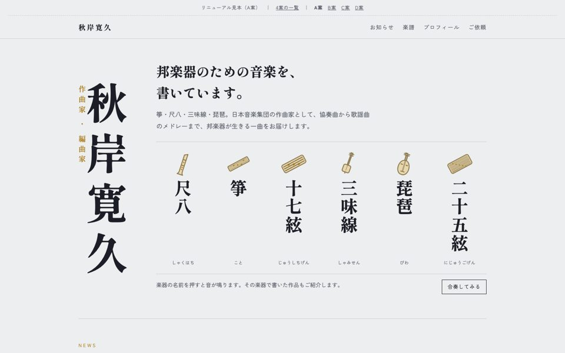
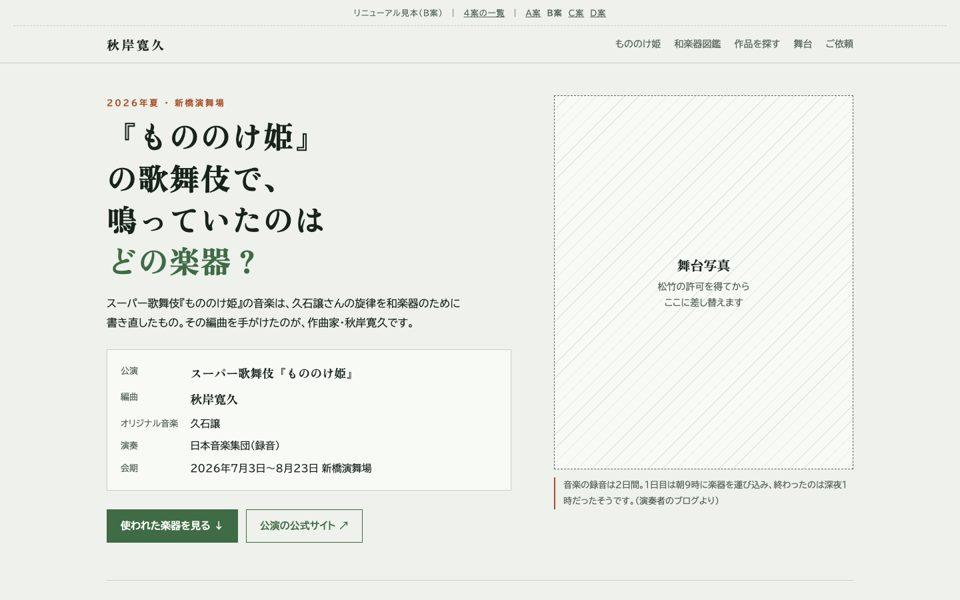
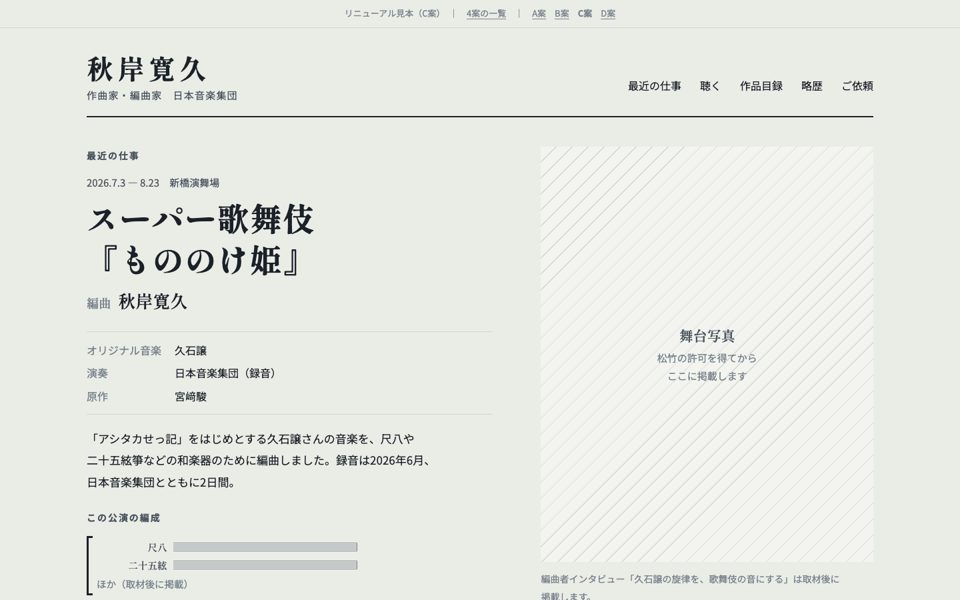
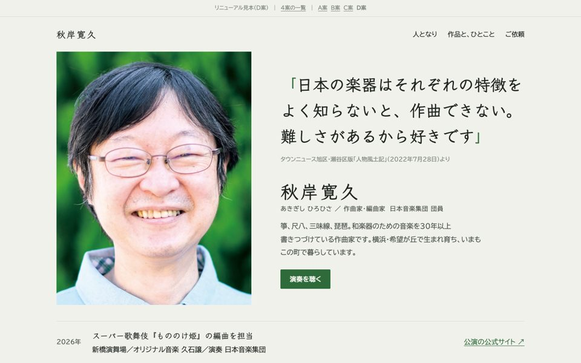

4つの案をお作りしました。どの案も、いまのホームページの作品リストとプロフィールをもとにしています。画像を押すと、それぞれの見本が開きます。

内容はいまのままに、見た目だけを整えた案です。楽器の名前を押すと、音が鳴ります。

『もののけ姫』を入口に、和楽器図鑑から作品を探せる案です。

約80の作品を、楽器や人数から探せる案です。各曲の編成を総譜の段で描き、演奏の動画をその場で観られます。

笑顔の写真と、作品に添えたご本人の言葉が主役の案です。こまめな更新をしなくても古びない作りにしています。
見本のため、写真の枠や取材の欄など、仮のものが含まれています。このページは検索には表示されない設定です。